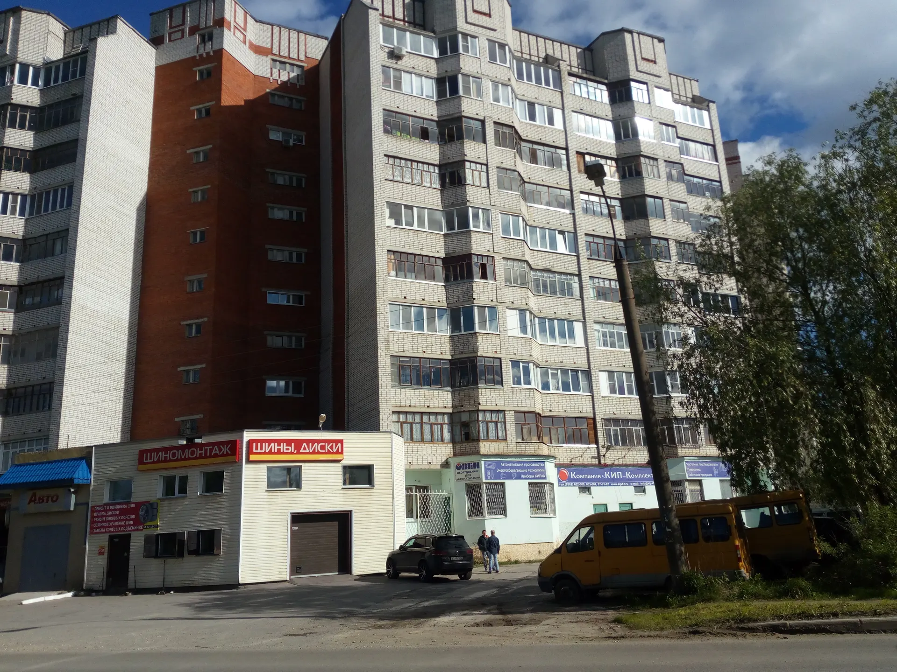
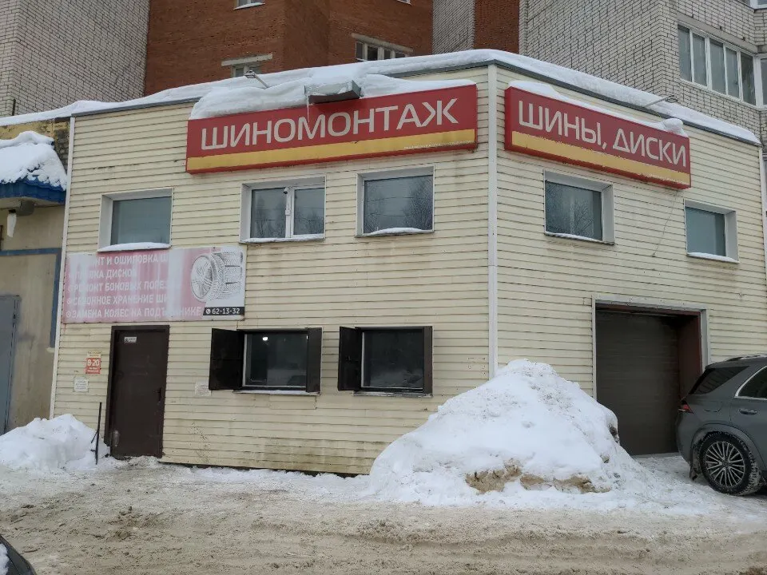
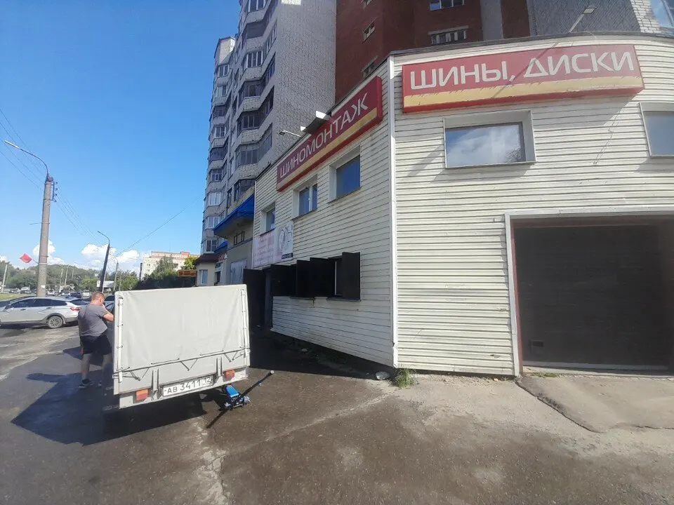
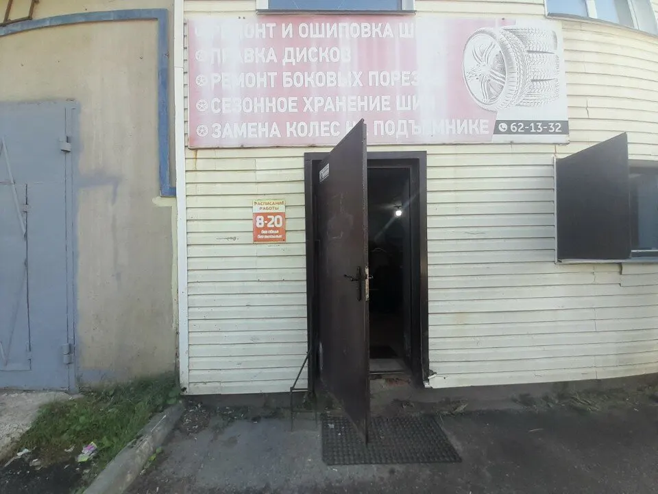

Шиномонтаж · Йошкар-Ола
Шиномонтаж в Йошкар-Оле на Дружбы, 77
Переобуем колёса, отбалансируем, при необходимости поправим диск. Работаем каждый день с 8 до 20, можно записаться заранее.
- Каждый день с 08:00 до 20:00, без выходных
- Перебортировка четырёх колёс - 800 ₽
- Хранение шин и предварительная запись

Работы и цены
Цена за четыре колеса - от размера и типа шин. Точную сумму назовём по телефону до начала работы.
Шиномонтаж
- Перебортировка 4-х колёсот 800 ₽
- Балансировка колёсна стендеуточнить
Дополнительно
- Правка дисковуточнить
- Хранение шинуточнить
Спросите сумму по телефону до того, как колёса снимут.
Как проходит визит
- 01
Позвоните или запишитесь
Скажите размер колёс и что нужно: переобуть, отбалансировать или поправить диск.
- 02
Приезжайте к назначенному времени
Ул. Дружбы, 77. Работаем ежедневно с 08:00 до 20:00.
- 03
Колёса на станок и на стенд
Перебортировка и балансировка в одном визите.
- 04
Проверьте и забирайте
Сумму называем заранее, чтобы в конце не было неожиданностей.



Что есть на сервисе
Работаем каждый день
Ежедневно с 08:00 до 20:00, выходных нет. Перед выездом лучше позвонить.
Можно записаться заранее
Предварительная запись - чтобы приехать к своему времени, а не в очередь.
Правим диски
Если диск погнут, можно поправить в том же визите.
Хранение шин
Сезонное хранение комплекта - спросите условия по телефону.
Отзывы с Яндекс.Карт
«Спасибо ребятам за грамотную балансировку за очень адекватный ценник. Всё чётко, рекомендую. Ещё и подвеску посмотрели бесплатно.»
Алексей Нестеров · 14 января 2025
«Пользуюсь услугами этого сервиса уже несколько лет. Все нравится, есть предварительная запись. Персонал вежливый, делают все быстро и качественно. Цены умеренные. Рекомендую»
Олег Емадаков · 14 ноября 2022
«Всё хорошо. Отличный сервис. Приехал, увидели, сделали, уехал! Специалист своего дела! Вежливый персонал. Очереди не было. При желании можно записаться.»
Иван Тимофеев · 6 апреля
Отзывы с карточки на Яндекс.Картах, без правок.
Частые вопросы
Какие работы делаете?
Шиномонтаж легковых колёс, балансировка, правка дисков, хранение шин.
Сколько стоит переобуть колёса?
Перебортировка четырёх колёс - от 800 ₽. Итоговая сумма зависит от размера и типа шин, назовём по звонку.
Нужна ли запись?
Можно приехать без записи, но к своему времени быстрее: запишитесь по телефону.
Где вы находитесь?
Ул. Дружбы, 77, Йошкар-Ола. Маршрут есть на Яндекс.Картах.
Позвоните - подскажем, как подъехать
- Адрес
- ул. Дружбы, 77, Йошкар-Ола
- Часы
- Ежедневно 08:00-20:00
- Телефон
- +7 (8362) 62-13-32